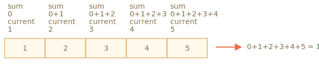

数组提供的方法有很多。为了方便起见，在本章中，我们将按组讲解。
我们已经学了从数组的首端或尾端添加和删除元素的方法：
arr.push(...items) —— 从尾端添加元素，arr.pop() —— 从尾端提取元素，arr.shift() —— 从首端提取元素，arr.unshift(...items) —— 从首端添加元素。这里还有其他几种方法。
如何从数组中删除元素？
数组是对象，所以我们可以尝试使用 delete：
let arr = ["I", "go", "home"];
delete arr[1]; // remove "go"
alert( arr[1] ); // undefined
// now arr = ["I", , "home"];
alert( arr.length ); // 3元素被删除了，但数组仍然有 3 个元素，我们可以看到 arr.length == 3。
这很正常，因为 delete obj.key 是通过 key 来移除对应的值。对于对象来说是可以的。但是对于数组来说，我们通常希望剩下的元素能够移动并占据被释放的位置。我们希望得到一个更短的数组。
所以应该使用特殊的方法。
arr.splice(str) 方法可以说是处理数组的瑞士军刀。它可以做所有事情：添加，删除和插入元素。
语法是：
arr.splice(index[, deleteCount, elem1, ..., elemN])从 index 开始：删除 deleteCount 个元素并在当前位置插入 elem1, ..., elemN。最后返回已删除元素的数组。
通过例子我们可以很容易地掌握这个方法。
让我们从删除开始：
let arr = ["I", "study", "JavaScript"];
arr.splice(1, 1); // 从索引 1 开始删除 1 个元素
alert( arr ); // ["I", "JavaScript"]简单，对吧？从索引 1 开始删除 1 个元素。
在下一个例子中，我们删除了 3 个元素，并用另外两个元素替换它们：
let arr = ["I", "study", "JavaScript", "right", "now"];
// remove 3 first elements and replace them with another
arr.splice(0, 3, "Let's", "dance");
alert( arr ) // now ["Let's", "dance", "right", "now"]在这里我们可以看到 splice 返回了已删除元素的数组：
let arr = ["I", "study", "JavaScript", "right", "now"];
// 删除前两个元素
let removed = arr.splice(0, 2);
alert( removed ); // "I", "study" <-- 被从数组中删除了的元素我们可以将 deleteCount 设置为 0，splice 方法就能够插入元素而不用删除任何元素：
let arr = ["I", "study", "JavaScript"];
// 从索引 2 开始
// 删除 0 个元素
// 然后插入 "complex" 和 "language"
arr.splice(2, 0, "complex", "language");
alert( arr ); // "I", "study", "complex", "language", "JavaScript"在这里和其他数组方法中，负向索引都是被允许的。它们从数组末尾计算位置，如下所示：
```js
let arr = [1, 2, 5];
// 从索引 -1（尾端前一位）
// 删除 0 个元素，
// 然后插入 3 和 4
arr.splice(-1, 0, 3, 4);
alert( arr ); // 1,2,3,4,5
```arr.slice 方法比 arr.splice 简单得多。
语法是：
arr.slice([start], [end])它会返回一个新数组，将所有从索引 start 到 end（不包括 end）的数组项复制到一个新的数组。start 和 end 都可以是负数，在这种情况下，从末尾计算索引。
它和字符串的 str.slice 方法有点像，就是把子字符串替换成子数组。
例如：
let arr = ["t", "e", "s", "t"];
alert( arr.slice(1, 3) ); // e,s（复制从位置 1 到位置 3 的元素）
alert( arr.slice(-2) ); // s,t（复制从位置 -2 到尾端的元素）我们也可以不带参数地调用它：arr.slice() 会创建一个 arr 的副本。其通常用于获取副本，以进行不影响原始数组的进一步转换。
arr.concat 创建一个新数组，其中包含来自于其他数组和其他项的值。
语法：
arr.concat(arg1, arg2...)它接受任意数量的参数 —— 数组或值都可以。
结果是一个包含来自于 arr，然后是 arg1，arg2 的元素的新数组。
如果参数 argN 是一个数组，那么其中的所有元素都会被复制。否则，将复制参数本身。
例如：
let arr = [1, 2];
// create an array from: arr and [3,4]
alert( arr.concat([3, 4]) ); // 1,2,3,4
// create an array from: arr and [3,4] and [5,6]
alert( arr.concat([3, 4], [5, 6]) ); // 1,2,3,4,5,6
// create an array from: arr and [3,4], then add values 5 and 6
alert( arr.concat([3, 4], 5, 6) ); // 1,2,3,4,5,6通常，它只复制数组中的元素。其他对象，即使它们看起来像数组一样，但仍然会被作为一个整体添加：
let arr = [1, 2];
let arrayLike = {
0: "something",
length: 1
};
alert( arr.concat(arrayLike) ); // 1,2,[object Object]……但是，如果类似数组的对象具有 Symbol.isConcatSpreadable 属性，那么它就会被 concat 当作一个数组来处理：此对象中的元素将被添加：
let arr = [1, 2];
let arrayLike = {
0: "something",
1: "else",
[Symbol.isConcatSpreadable]: true,
length: 2
};
alert( arr.concat(arrayLike) ); // 1,2,something,elsearr.forEach 方法允许为数组的每个元素都运行一个函数。
语法：
arr.forEach(function(item, index, array) {
// ... do something with item
});例如，下面这个程序显示了数组的每个元素：
// 对每个元素调用 alert
["Bilbo", "Gandalf", "Nazgul"].forEach(alert);而这段代码更详细地介绍了它们在目标数组中的位置：
["Bilbo", "Gandalf", "Nazgul"].forEach((item, index, array) => {
alert(`${item} is at index ${index} in ${array}`);
});该函数的结果（如果它有返回）会被抛弃和忽略。
现在，让我们介绍在数组中进行搜索的方法。
arr.indexOf、arr.lastIndexOf 和 arr.includes 方法与字符串操作具有相同的语法，并且作用基本上也与字符串的方法相同，只不过这里是对数组元素而不是字符进行操作：
arr.indexOf(item, from) 从索引 from 开始搜索 item，如果找到则返回索引，否则返回 -1。arr.lastIndexOf(item, from) —— 和上面相同，只是从右向左搜索。arr.includes(item, from) —— 从索引 from 开始搜索 item，如果找到则返回 true（译注：如果没找到，则返回 false）。例如：
let arr = [1, 0, false];
alert( arr.indexOf(0) ); // 1
alert( arr.indexOf(false) ); // 2
alert( arr.indexOf(null) ); // -1
alert( arr.includes(1) ); // true请注意，这些方法使用的是严格相等 === 比较。所以如果我们搜索 false，会精确到的确是 false 而不是数字 0。
如果我们想检查是否包含某个元素，并且不想知道确切的索引，那么 arr.includes 是首选。
此外，includes 的一个非常小的差别是它能正确处理NaN，而不像 indexOf/lastIndexOf：
const arr = [NaN];
alert( arr.indexOf(NaN) ); // -1（应该为 0，但是严格相等 === equality 对 NaN 无效）
alert( arr.includes(NaN) );// true（这个结果是对的）想象一下，我们有一个对象数组。我们如何找到具有特定条件的对象？
这时可以用 arr.find 方法。
语法如下：
let result = arr.find(function(item, index, array) {
// 如果返回 true，则返回 item 并停止迭代
// 对于 falsy 则返回 undefined
});依次对数组中的每个元素调用该函数：
item 是元素。index 是它的索引。array 是数组本身。如果它返回 true，则搜索停止，并返回 item。如果没有搜索到，则返回 undefined。
例如，我们有一个存储用户的数组，每个用户都有 id 和 name 字段。让我们找到 id == 1 的那个用户：
let users = [
{id: 1, name: "John"},
{id: 2, name: "Pete"},
{id: 3, name: "Mary"}
];
let user = users.find(item => item.id == 1);
alert(user.name); // John在现实生活中，对象数组是很常见的，所以 find 方法非常有用。
注意在这个例子中，我们传给了 find 一个单参数函数 item => item.id == 1。这很典型，并且 find 方法的其他参数很少使用。
arr.findIndex 方法（与 arr.find 方法）基本上是一样的，但它返回找到元素的索引，而不是元素本身。并且在未找到任何内容时返回 -1。
find 方法搜索的是使函数返回 true 的第一个（单个）元素。
如果需要匹配的有很多，我们可以使用 arr.filter(fn)。
语法与 find 大致相同，但是 filter 返回的是所有匹配元素组成的数组：
let results = arr.filter(function(item, index, array) {
// 如果 true item 被 push 到 results，迭代继续
// 如果什么都没找到，则返回空数组
});例如：
let users = [
{id: 1, name: "John"},
{id: 2, name: "Pete"},
{id: 3, name: "Mary"}
];
// 返回前两个用户的数组
let someUsers = users.filter(item => item.id < 3);
alert(someUsers.length); // 2让我们继续学习进行数组转换和重新排序的方法。
arr.map 方法是最有用和经常使用的方法之一。
它对数组的每个元素都调用函数，并返回结果数组。
语法：
let result = arr.map(function(item, index, array) {
// 返回新值而不是当前元素
})例如，在这里我们将每个元素转换为它的字符串长度：
let lengths = ["Bilbo", "Gandalf", "Nazgul"].map(item => item.length);
alert(lengths); // 5,7,6arr.sort 方法对数组进行 原位（in-place） 排序，更改元素的顺序。(译注：原位是指在此数组内，而非生成一个新数组。)
它还返回排序后的数组，但是返回值通常会被忽略，因为修改了 arr 本身。
语法：
let arr = [ 1, 2, 15 ];
// 该方法重新排列 arr 的内容
arr.sort();
alert( arr ); // 1, 15, 2你有没有注意到结果有什么奇怪的地方？
顺序变成了 1, 15, 2。不对，但为什么呢？
这些元素默认情况下被按字符串进行排序。
从字面上看，所有元素都被转换为字符串，然后进行比较。对于字符串，按照词典顺序进行排序，实际上应该是 "2" > "15"。
要使用我们自己的排序顺序，我们需要提供一个函数作为 arr.sort() 的参数。
该函数应该比较两个任意值并返回：
function compare(a, b) {
if (a > b) return 1; // 如果第一个值比第二个值大
if (a == b) return 0; // 如果两个值相等
if (a < b) return -1; // 如果第一个值比第二个值小
}例如，按数字进行排序：
function compareNumeric(a, b) {
if (a > b) return 1;
if (a == b) return 0;
if (a < b) return -1;
}
let arr = [ 1, 2, 15 ];
arr.sort(compareNumeric);
alert(arr); // 1, 2, 15现在结果符合预期了。
我们思考一下这儿发生了什么。arr 可以是由任何内容组成的数组，对吗？它可能包含数字、字符串、对象或其他任何内容。我们有一组 一些元素。要对其进行排序，我们需要一个 排序函数 来确认如何比较这些元素。默认是按字符串进行排序的。
arr.sort(fn) 方法实现了通用的排序算法。我们不需要关心它的内部工作原理（大多数情况下都是经过 快速排序 算法优化的）。它将遍历数组，使用提供的函数比较其元素并对其重新排序，我们所需要的就是提供执行比较的函数 fn。
顺便说一句，如果我们想知道要比较哪些元素 —— 那么什么都不会阻止 alert 它们：
[1, -2, 15, 2, 0, 8].sort(function(a, b) {
alert( a + " <> " + b );
});该算法可以在此过程中，将一个元素与多个其他元素进行比较，但是它会尝试进行尽可能少的比较。
实际上，比较函数只需要返回一个正数表示“大于”，一个负数表示“小于”。
通过这个原理我们可以编写更短的函数：
```js
let arr = [ 1, 2, 15 ];
arr.sort(function(a, b) { return a - b; });
alert(arr); // 1, 2, 15
```你还记得 [箭头函数](info:arrow-functions-basics) 吗？这里使用箭头函数会更加简洁：
```js
arr.sort( (a, b) => a - b );
```
这与上面更长的版本完全相同。````smart header="使用 localeCompare for strings"
你记得 字符串比较 算法吗？默认情况下，它通过字母的代码比较字母。
对于许多字母，最好使用 str.localeCompare 方法正确地对字母进行排序，例如 Ö。
例如，让我们用德语对几个国家/地区进行排序：
let countries = ['Österreich', 'Andorra', 'Vietnam'];
alert( countries.sort( (a, b) => a > b ? 1 : -1) ); // Andorra, Vietnam, Österreich（错的）
alert( countries.sort( (a, b) => a.localeCompare(b) ) ); // Andorra,Österreich,Vietnam（对的！）
### reverse
[arr.reverse](mdn:js/Array/reverse) 方法用于颠倒 `arr` 中元素的顺序。
例如：
```js
let arr = [1, 2, 3, 4, 5];
arr.reverse();
alert( arr ); // 5,4,3,2,1
```
它也会返回颠倒后的数组 `arr`。
### split 和 join
举一个现实生活场景的例子。我们正在编写一个消息应用程序，并且该人员输入以逗号分隔的接收者列表：`John, Pete, Mary`。但对我们来说，名字数组比单个字符串舒适得多。怎么做才能获得这样的数组呢？
[str.split(delim)](mdn:js/String/split) 方法可以做到。它通过给定的分隔符 `delim` 将字符串分割成一个数组。
在下面的例子中，我们用“逗号后跟着一个空格”作为分隔符：
```js
let names = 'Bilbo, Gandalf, Nazgul';
let arr = names.split(', ');
for (let name of arr) {
alert( `A message to ${name}.` ); // A message to Bilbo（和其他名字）
}
```
`split` 方法有一个可选的第二个数字参数 —— 对数组长度的限制。如果提供了，那么额外的元素会被忽略。但实际上它很少使用：
```js
let arr = 'Bilbo, Gandalf, Nazgul, Saruman'.split(', ', 2);
alert(arr); // Bilbo, Gandalf
```
````smart header="拆分为字母"
调用带有空参数 `s` 的 `split(s)`，会将字符串拆分为字母数组：
```js
let str = "test";
alert( str.split('') ); // t,e,s,t
```arr.join(glue) 与 split 相反。它会在它们之间创建一串由 glue 粘合的 arr 项。
例如：
let arr = ['Bilbo', 'Gandalf', 'Nazgul'];
let str = arr.join(';'); // 使用分号 ; 将数组粘合成字符串
alert( str ); // Bilbo;Gandalf;Nazgul当我们需要遍历一个数组时 —— 我们可以使用 forEach，for 或 for..of。
当我们需要遍历并返回每个元素的数据时 —— 我们可以使用 map。
arr.reduce 方法和 arr.reduceRight 方法和上面的种类差不多，但稍微复杂一点。它们用于根据数组计算单个值。
语法是：
let value = arr.reduce(function(accumulator, item, index, array) {
// ...
}, [initial]);该函数一个接一个地应用于所有数组元素，并将其结果“搬运（carry on）”到下一个调用。
参数：
accumulator —— 是上一个函数调用的结果，第一次等于 initial（如果提供了 initial 的话）。item —— 当前的数组元素。index —— 当前索引。arr —— 数组本身。应用函数时，上一个函数调用的结果将作为第一个参数传递给下一个函数。
因此，第一个参数本质上是累加器，用于存储所有先前执行的组合结果。最后，它成为 reduce 的结果。
听起来复杂吗？
掌握这个知识点的最简单的方法就是通过示例。
在这里，我们通过一行代码得到一个数组的总和：
let arr = [1, 2, 3, 4, 5];
let result = arr.reduce((sum, current) => sum + current, 0);
alert(result); // 15传递给 reduce 的函数仅使用了 2 个参数，通常这就足够了。
让我们看看细节，到底发生了什么。
sum 的值为初始值 initial（reduce 的最后一个参数），等于 0，current 是第一个数组元素，等于 1。所以函数运行的结果是 1。sum = 1，我们将第二个数组元素（2）与其相加并返回。sum = 3，我们继续把下一个元素与其相加，以此类推……计算流程：

或者以表格的形式表示，每一行代表的是对下一个数组元素的函数调用：
sum |
current |
result |
|
|---|---|---|---|
| 第 1 次调用 | 0 |
1 |
1 |
| 第 2 次调用 | 1 |
2 |
3 |
| 第 3 次调用 | 3 |
3 |
6 |
| 第 4 次调用 | 6 |
4 |
10 |
| 第 5 次调用 | 10 |
5 |
15 |
在这里，我们可以清楚地看到上一个调用的结果如何成为下一个调用的第一个参数。
我们也可以省略初始值：
let arr = [1, 2, 3, 4, 5];
// 删除 reduce 的初始值（没有 0）
let result = arr.reduce((sum, current) => sum + current);
alert( result ); // 15结果是一样的。这是因为如果没有初始值，那么 reduce 会将数组的第一个元素作为初始值，并从第二个元素开始迭代。
计算表与上面相同，只是去掉第一行。
但是这种使用需要非常小心。如果数组为空，那么在没有初始值的情况下调用 reduce 会导致错误。
例如：
let arr = [];
// Error: Reduce of empty array with no initial value
// 如果初始值存在，则 reduce 将为空 arr 返回它（即这个初始值）。
arr.reduce((sum, current) => sum + current);所以建议始终指定初始值。
arr.reduceRight 和 arr.reduce 方法的功能一样，只是遍历为从右到左。
数组是基于对象的，不构成单独的语言类型。
所以 typeof 不能帮助从数组中区分出普通对象：
alert(typeof {}); // object
alert(typeof []); // same……但是数组经常被使用，因此有一种特殊的方法用于判断：Array.isArray(value)。如果 value 是一个数组，则返回 true；否则返回 false。
alert(Array.isArray({})); // false
alert(Array.isArray([])); // true几乎所有调用函数的数组方法 —— 比如 find，filter，map，除了 sort 是一个特例，都接受一个可选的附加参数 thisArg。
上面的部分中没有解释该参数，因为该参数很少使用。但是为了完整性，我们需要讲讲它。
以下是这些方法的完整语法：
arr.find(func, thisArg);
arr.filter(func, thisArg);
arr.map(func, thisArg);
// ...
// thisArg 是可选的最后一个参数thisArg 参数的值在 func 中变为 this。
例如，在这里我们使用 army 对象方法作为过滤器，thisArg 用于传递上下文（passes the context）：
let army = {
minAge: 18,
maxAge: 27,
canJoin(user) {
return user.age >= this.minAge && user.age < this.maxAge;
}
};
let users = [
{age: 16},
{age: 20},
{age: 23},
{age: 30}
];
// 找到 army.canJoin 返回 true 的 user
let soldiers = users.filter(army.canJoin, army);
alert(soldiers.length); // 2
alert(soldiers[0].age); // 20
alert(soldiers[1].age); // 23如果在上面的示例中我们使用了 users.filter(army.canJoin)，那么 army.canJoin 将被作为独立函数调用，并且这时 this=undefined，从而会导致即时错误。
可以用 users.filter(user => army.canJoin(user)) 替换对 users.filter(army.canJoin, army) 的调用。前者的使用频率更高，因为对于大多数人来说，它更容易理解。
数组方法备忘单：
添加/删除元素：
push(...items) —— 向尾端添加元素，pop() —— 从尾端提取一个元素，shift() —— 从首端提取一个元素，unshift(...items) —— 向首端添加元素，splice(pos, deleteCount, ...items) —— 从 pos 开始删除 deleteCount 个元素，并插入 items。slice(start, end) —— 创建一个新数组，将从位置 start 到位置 end（但不包括 end）的元素复制进去。concat(...items) —— 返回一个新数组：复制当前数组的所有元素，并向其中添加 items。如果 items 中的任意一项是一个数组，那么就取其元素。搜索元素：
indexOf/lastIndexOf(item, pos) —— 从位置 pos 开始搜索 item，搜索到则返回该项的索引，否则返回 -1。includes(value) —— 如果数组有 value，则返回 true，否则返回 false。find/filter(func) —— 通过 func 过滤元素，返回使 func 返回 true 的第一个值/所有值。 findIndex 和 find 类似，但返回索引而不是值。遍历元素：
forEach(func) —— 对每个元素都调用 func，不返回任何内容。转换数组：
map(func) —— 根据对每个元素调用 func 的结果创建一个新数组。sort(func) —— 对数组进行原位（in-place）排序，然后返回它。reverse() —— 原位（in-place）反转数组，然后返回它。split/join —— 将字符串转换为数组并返回。reduce(func, initial) —— 通过对每个元素调用 func 计算数组上的单个值，并在调用之间传递中间结果。其他：
Array.isArray(arr) 检查 arr 是否是一个数组。请注意，sort，reverse 和 splice 方法修改的是数组本身。
这些是最常用的方法，它们覆盖 99％ 的用例。但是还有其他几个：
arr.some(fn)/arr.every(fn) 检查数组。
与 map 类似，对数组的每个元素调用函数 fn。如果任何/所有结果为 true，则返回 true，否则返回 false。
arr.fill(value, start, end) —— 从索引 start 到 end，用重复的 value 填充数组。
arr.copyWithin(target, start, end) —— 将从位置 start 到 end 的所有元素复制到 自身 的 target 位置（覆盖现有元素）。
有关完整列表，请参阅 手册。
乍看起来，似乎有很多方法，很难记住。但实际上这比看起来要容易得多。
浏览这个备忘单，以了解这些方法。然后解决本章中的习题来进行练习，以便让你有数组方法的使用经验。
然后，每当你需要对数组进行某些操作，而又不知道怎么做的时候，请回到这儿，查看这个备忘单，然后找到正确的方法。示例将帮助你正确编写它。用不了多久，你就自然而然地记住这些方法了，根本不需要你死记硬背。